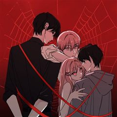
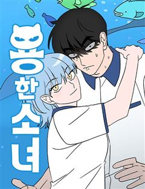

집착·나쁜남자·후회남 웹툰 추천 TOP 30
집착남, 집착녀, 집착물, 계략남, 계략녀 같은 태그가 붙은 작품을 모았어요. 네이버웹툰·카카오웹툰·레진코믹스에서 조건에 맞는 작품 205개 중 인기 순으로 30개를 골랐어요. 인기 TOP 3: 소녀의 세계, 작전명 순정, 이번 생도 잘 부탁해
2026-10-08 기준 · 성인 작품 제외
내 취향으로 더 좁혀서 추천받기 →-
1
 네이버웹툰
네이버웹툰소녀의 세계
완벽해 보이지만 사실 외로웠던 백조들과 맘씨 착한 오리가 만나 여러 갈등을 함께 겪으며 진짜 친구가 되어가는 소녀들의 찐 우정물
까칠남설렘폭발공감우정청춘네이버웹툰에서 보기 → -
2
 네이버웹툰
네이버웹툰작전명 순정
내 남자친구와 절친의 키스를 목격했다. 그것도 하필이면 재수 없는 같은 반 남자애 '고은혁'과 함께. 안 그래도 혼란스러운데.. 사람마다 평생 받을 사랑의 양이 정해져있다고?? 심지어 내가 받을 수 있는 사랑의 양은 '0'??? 알거지 운명을 바꿔보려는 수애와, 그런 수애에게 말려든…
까칠남나쁜남자혐관청춘사연남네이버웹툰에서 보기 → -
3
 네이버웹툰
네이버웹툰이번 생도 잘 부탁해
전생을 기억하는 삶은 어떨까? 매번 전생을 기억하는 무료한 삶을 살던 18회차 인생, 윤주원이란 이름으로 살던 12살에 서하를 만나게 된다. 특별할 거 없던 그 아이가 무료한 삶을 특별하게 만들어주었지만 교통사고로 18회차 인생이 끝나고 만다. 다시 태어난 19회차 인생, 윤주원에서…
폭스남몰아보기재회구원서사네이버웹툰에서 보기 → -
4
 네이버웹툰
네이버웹툰하루만 네가 되고 싶어
'완벽한 인생이었다, 그 애가 나타나기 전까지는' 반전에 반전을 거듭하는 치밀한 궁중 서스펜스 네이버웹툰 최강자전 19년 대표작.
집착남계략남계략녀서양왕족/귀족네이버웹툰에서 보기 → -
5
 네이버웹툰
네이버웹툰퀘스트지상주의
[외모지상주의], [싸움독학], [인생존망]과 세계관을 공유하는 작품! 공부, 싸움, 외모. 뭐 하나 잘난 것 없는 평범한 고등학생 ‘김수현’의 눈앞에 갑자기 퀘스트창이 나타났다! 첫 번째 퀘스트, [엄마한테 사과하기]를 완료한 수현은 보상으로 키가 3cm 커지게 되는데! 퀘스트 엄청…
집착녀사이다현대게임상태창네이버웹툰에서 보기 → -
6
 네이버웹툰
네이버웹툰세레나
왕국에서 가장 화려했던 나의 가문이 망했다. 할머니가 선택한 유일한 방법은 계약 결혼뿐. 하필 그 남자와.
계략녀까칠남무심남결혼생활악역이주인공네이버웹툰에서 보기 → -
7
 네이버웹툰
네이버웹툰99강화나무몽둥이
약육강식이 진리인 가상 현실 게임 '크로노 라이프'. 허접이라며 무시만 당하던 '나'는 우연히 얻은 초보용 기본 무기 '나무 뭉둥이' 를 +99 강화까지 성공하게 되고, 본인을 무시하던 놈들을 찾아다니며 몽둥이로 무자비하게 패기 시작하는데..! 막장 스케일 사이다 액션 스타트!!
유혹녀사이다게임명랑녀능력녀네이버웹툰에서 보기 → -
8
 네이버웹툰
네이버웹툰중간에서 만나
"내가 재밌게 해줄 수 있는데." 서른 살, 노잼 인생을 살고 있는 여름 앞에 어느 날 나타난 미스테리 연하남! 앞뒤 가리지 않고 직진하는 모습이 그저 귀엽다가도, 어딘가 세하고 어딘가 집착적인데? 대체 너 나한테 원하는 게 뭐니?! 두근두근 쌍방사기 로맨스 코미디!
폭스남리얼로맨스미친작화햇살캐로맨스코미디네이버웹툰에서 보기 → -
9
 네이버웹툰
네이버웹툰세기말 풋사과 보습학원
어릴 때 알던 재수없던 놈이 더 재수없는 놈이 되어 돌아왔다! 중3 황미애의 옆 빌라에 어릴 때 잠깐 시골에서 봤던 김철이 이사 와 같은 학교 같은 반이 되고 '철이와 미애'라 놀림 받자 김철은 미애를 불쾌해하며 피한다. 너만 불쾌한 줄 알아? 나쁜 놈! 미애는 속이 상하지만 그럼에도…
폭스남까칠남능글남설렘폭발청춘네이버웹툰에서 보기 → -
10
 네이버웹툰
네이버웹툰사내연애 사절!
첫사랑 별거 있나. 어른이 되어 첫사랑을 다시 만난다면, 과연 우리는 여전히 설렐까? 첫사랑에서 친구로, 친구에서 동료로, 역행하는 관계 속에서 솔직한 내 마음은 '사내연애 사절!' <유일무이 로맨스> 두부 X <바른연애 길잡이> 남수 작가의 만남! 로맨스 장인들의 믿고 보는 오피스…
폭스남리얼로맨스첫사랑다정녀로맨틱코미디네이버웹툰에서 보기 → -
11
 네이버웹툰
네이버웹툰언니, 이번 생엔 내가 왕비야
약혼자, 언니, 부모. 모든 것으로부터 버려진 그 날, 아리아드네는 15년 전으로 회귀한다. “젠장! 나는 지금 너에게 구애하는 거라고!” 태도가 완전히 달라진 전생의 약혼자부터, “울지 마, 아리아드네. 너는 네가 얼마나 예쁜지 모르지?” 그녀에게 첫눈에 반한 다정한 왕자님까지. 이…
계략녀레드아이스 스튜디오사이다서양가족네이버웹툰에서 보기 → -
12
 네이버웹툰
네이버웹툰여우놀이
평범하게만 살아온 박온유의 일상에 어느 날 찾아와 둘도 없는 베프가 된 ‘예쁜 애’ 신채리. 두 사람은 서울 최상위 학군의 명문 고등학교 상목고에 진학하게 된 후, 모든 10대들의 워너비 ‘상목고의 여우들’을 만나 아슬아슬한 여우놀이에 휘말리게 되는데…. 욕망을 품은 10대 소녀들의…
폭스남현대우정청춘아이돌네이버웹툰에서 보기 → -
13
 네이버웹툰
네이버웹툰절대군림
"이 강호, 제가 먹습니다!" 왼손에는 군자검을, 오른손에는 지옥도를 든 미스터리한 과일상 아들. 입담과 재주는 물론, 압도적인 무공 실력까지 갖춘 완벽한 그의 진짜 정체는 무엇일까. '강호제패'를 품은 스무 살 청년, '적이건(赤利乾)'의 유쾌한 여정이 시작된다!
능글남천마정통무협동양배틀네이버웹툰에서 보기 → -
14
 네이버웹툰
네이버웹툰벙커의 낮
어릴 적 벙커에 데려간 ‘원혁’을 내친 ‘서우’. 이후 고등학생이 된 서우는 고립된 삶에 극단적인 시도를 하던 중, 또 다른 벙커를 발견하고 들어간다. 그러나 피 칠갑인 채 들어온 ‘원혁’에 의해 갇히게 되는데...
집착남계략남폭스남순애남감성적인네이버웹툰에서 보기 → -
15
 네이버웹툰
네이버웹툰다정한 침입자
"우리가 이성으로 보일 확률? 절대 없지." 어린 시절 사고로 가족을 잃고 한치오 가족의 보살핌 속에 자란 정이한. 커갈수록 어색함만 쌓여갔던 옆집 오빠와의 동거가 시작되는데... 꼭꼭 숨겨둔 마음에 자꾸만 침입하는 서로의 관계는 어떻게 변하게 될까.
능글남현대소심녀로맨스청춘로맨스네이버웹툰에서 보기 → -
16
 네이버웹툰
네이버웹툰하렘의 남자들
"내 후궁들부터 들이기로 하였다. 한 다섯 정도." 타리움 제국의 황녀, 라틸. 그녀의 첫사랑 하이신스는 황제가 되기 위해 본국 권력자의 딸과 결혼한다. 충격 받는 라틸. 하지만 그 충격이 가시기도 전에 황태녀가 되고,이복남매의 반란 세력에 맞서 황위를 지켜낸다. 그렇게 여황제가 된…
폭스남까칠남능글남순진남자극적인네이버웹툰에서 보기 → -
17
 네이버웹툰
네이버웹툰하는 사이
모두의 태양이자 주목받는 존재인 강시화, 그런 시화와 특별한 소꿉 친구 사이로 주변의 질투를 받던 이은서. 어느 날 홀연히 사라졌던 시화가 몇 년이 흘러 돌아왔다. 자꾸 흔들리는 은서의 마음과 도저히 짐작할 수 없는 시화의 행동. 우리는 특별한 사이잖아? 너도 그렇게 생각하지? 하지만…
폭스남리얼로맨스자극적인설렘폭발청춘네이버웹툰에서 보기 → -
18
 네이버웹툰
네이버웹툰양아치의 첫사랑
‘그 시절, 내가 좋아한 양아치 남자애도 날 좋아했었다.’ 도래는 대학에서 5년 만에 첫사랑 해원을 마주친다. 그리고 뒤늦은 고백을 받는데.. 기쁜 마음보다는 당황스럽기만 하다. 그에게는 여자친구가 있었기에! 제정신 아닌 그의 5년 만의 고백. 과연 이 감정은 여전히 유효한 것일까?
폭스남순애남2025 연재직행열차설렘폭발첫사랑네이버웹툰에서 보기 → -
19

카카오웹툰집착 시리즈
소꿉친구 유한과 수아, 그리고 그들의 형제 지한과 신우. 어릴 때부터 함께해 온 네 사람의 관계는 평범한 우정과는 어딘가 다르다. 모두의 관심을 한몸에 받는 수아의 눈에는 오직 유한뿐. 그런 수아를 좋아하는 일진이 유한을 괴롭히기 시작하는데... 과연 수아는 바라던 대로 유한을 온전히…
집착물소꿉친구카카오웹툰에서 보기 → -
20
 네이버웹툰
네이버웹툰가장 썩은 것을 줄게
10년을 사귄 남자친구가 다른 여자와 하룻밤을 보냈다. 그래서 나도 그에게 상처를 주기로 결심했다. 고르고 골라서 가장 나쁘고 치사한 방법으로. 끝나가는 연애 끝에 다시 쓰여지는 이 관계. 단 한 번도 상상 해 본 적도 없는 최악으로 치닫는 상황 속에서, 우리는 다시 사랑 할 수 있을…
후회물감성적인자극적인현대다정남네이버웹툰에서 보기 → -
21
 네이버웹툰
네이버웹툰삼이는 재생한다
모든 게 완벽했던 인생에서 제발로 뛰쳐나와 극한의 가난한 생활을 하던 '오삼이'는 차가운 외모지만 마음만은 따뜻한 '김표준'과 그런 표준을 남몰래 좋아하는 '유찬'과 가까워지며 묘한 삼각관계로 뒤범벅된 학교생활을 하게 된다.
폭스남무심남순애녀감성적인청춘네이버웹툰에서 보기 → -
22
 네이버웹툰
네이버웹툰상사불상사
갑의 말에는 절대복종! 5년차 K-직장인 하은호의 신념이다. '빈틈없이 쌓아온 커리어만 있다면 연애는 안 해도 된다.' 그런 그녀 앞에 어느 날 뚝 떨어진 낙하산 신입? 다시 흔들기 시작하는 과거 첫사랑? 이 불상사를 어떻게 해야 해! 달콤살벌 오피스 로맨스 코미디!
무심남리얼로맨스설렘폭발오피스대형견남네이버웹툰에서 보기 → -
23
 네이버웹툰
네이버웹툰피폐물을 힐링물로 만드는 방법
[살아생전 즐겨보던 소설에 환생했다.] 너무 진부하다구요? 아닐 걸요! 왜냐면 그 소설이... 19금 피폐물이거든요...! ̗̀(ꀬ⏖ꀬ∴) 예쁘고 상냥한 여주인공의 동생으로 환생했지만, 언니의 새드엔딩을 지켜볼 수 없었던 레나티스는 언니 대신 잘생긴 찐 광기남주 테오도르에게 잡혀간다.…
집착남짐승남설렘폭발명랑녀햇살녀네이버웹툰에서 보기 → -
24
 네이버웹툰
네이버웹툰남편은 한 명으로 족하다
<모든 사람들이 나를 사랑하면 사는 게 재밌을 줄 알았다> 평범한 회사원이 로맨스 판타지 게임의 매력 수치 999 백작 영애 '크로체타'에 빙의했다. 사람들이 눈만 마주치면 자신에게 반해서 달려드는 환장할 상황. 크로체타는 '남자 주인공'을 공략하여 엔딩을 보고, 이 게임을 탈출하기로…
집착남계략남무심남자극적인치명적인네이버웹툰에서 보기 → -
25

네이버웹툰용한소녀
열여덟살이 결혼은 무슨 결혼이야! 정략결혼을 피해 용궁에서 지상으로 도망친 용왕의 딸 김용만은 성공을 목표로 전교 1등의 꿈을 품고 고등학교에 입학한다. 그런데 용만의 옆자리인 전교 1등, 심해수는 라이벌의 등장이 달갑지 않은 듯한데... 공부만 하기에도 바쁜 두 사람이 어째서인지 자…
까칠남후회물무해한러블리동아리네이버웹툰에서 보기 → -
26
 네이버웹툰
네이버웹툰내 남편의 정부에게
나, 레티시아 비올렛은 남편에게 헌신했지만, 모든 것을 잃었다. 그대로 목숨까지 잃을 뻔하던 찰나, 한 남자가 나타난다. 그 남자는 완벽한 복수를 이루도록 도와준다는데... "제 복수를 이루어 주겠다는 말... 꼭 지켜 주세요." 날 죽음까지 몰아넣은 그들에게, 내가 받았던 모든 걸…
폭스남능글남유혹남자극적인환골탈태네이버웹툰에서 보기 → -
27네이버웹툰
빌런의 순정
비서인 연우는 부사장 윤석의 가스라이팅과 괴롭힘에 고향인 목산군으로 도망간다. 그곳에서 설양 건설의 전무 성헌을 만나게 되고, 얼음장 같던 성헌의 마음은 따스한 봄과 닮은 연우에게 녹아 스며든다. 한편 윤석은 연우를 찾으러 나서는데...
집착남첫사랑능력남재벌남사연녀네이버웹툰에서 보기 → -
28
 네이버웹툰
네이버웹툰문과X이과
모의고사만 쳤다 하면 실수를 연발해 만점에 실패했던 문과 전교 1등 양소연, 1학년 때부터 모의고사 만점 이과 1등 김준수가 거슬린다. 대망의 고3 첫 모의고사, 소연은 마음이 급해져 준수에게 접근하게 되는데...
계략녀능글남너드남청춘로맨틱코미디네이버웹툰에서 보기 → -
29
 네이버웹툰
네이버웹툰수인 보호소에서 남주를 입양해 버렸다
피폐삽질 소설의 시에나 로베트라는 악녀에 빙의했다. 돌연변이라는 이유로 표범 가문에서 버려져 수인 보호소에 온 남주를 괴롭히다, 뒤늦게 아들을 찾아온 공작에 의해 단명하는 역. 어떻게든 살아보겠다고 팔불출 아빠를 설득해서 공작이 오기 전까지 이반을 보호하는 데는 성공했는데……. 막상…
악녀순진남성장로판악역이주인공가족네이버웹툰에서 보기 → -
30
 네이버웹툰
네이버웹툰공작님의 아이만 필요합니다
‘과거로 돌아갈 수 있다면, 그 사람을 사랑하지 않을 텐데.’ 회귀 후, 전남편과의 두 번째 결혼은 오직 아이를 위해서였다. 그렇게 기적처럼 얻은 두 번째 생은 사랑을 갈구하던 전생과 달리 오로지 아이를 다시 만나겠다는 일념하에 그와의 결혼을 선택했다. “딱 일 년만 나와의 결혼을 유…
후회물눈물샘자극고자극로맨스선결혼후연애로판네이버웹툰에서 보기 →